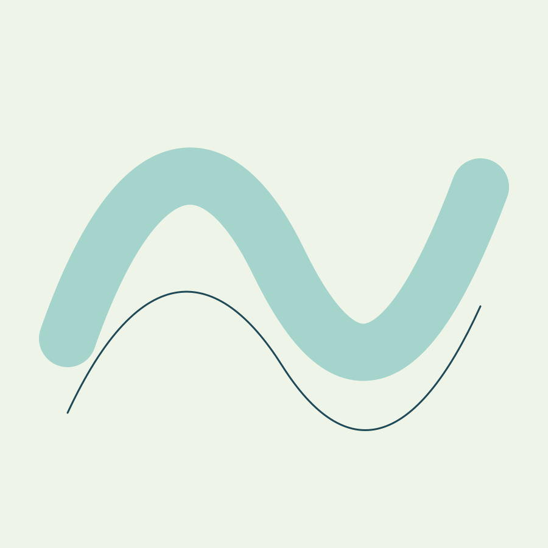

01
Begin where you are
A practice that makes space for your own pace.

MOVEMENT / BREATH / THE COASTAL WAY
Find your own rhythm. Make a little room for movement.

A coherent little world
Make a little room for movement. Find your own rhythm.
01
A practice that makes space for your own pace.
02
Movement, breath, and consistency over perfection.
03
A calm, thoughtful place to connect with yourself.

The point of view
Tidal contours, folded wave ribbons, sea-glass translucency, and airy movement typography. The composition alternates still reading areas with broad flowing graphics.